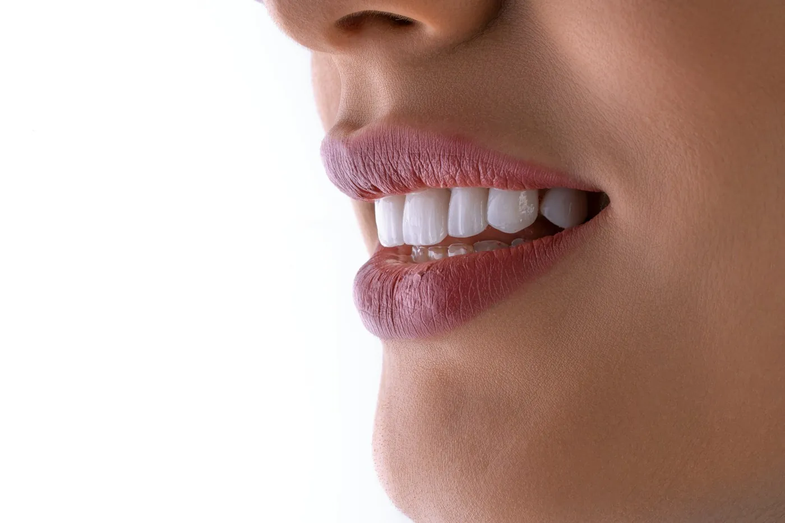

Clareamento
No consultório e em casa, com moldeira sob medida e acompanhamento.
a partir deR$ 590

Planejamento digitalProva antes de colarAté 18x sem juros
O que é. Tratamentos que mudam cor, forma ou proporção dos dentes e da gengiva: clareamento, lentes de contato dental em porcelana, facetas em resina e gengivoplastia.
O planejamento é coordenado pela Dra. Júlia Prado, com fotos, escaneamento e um ensaio do sorriso feito na sua boca antes de qualquer preparo.
Como pensamos. Primeiro saúde, depois estética: cárie, gengiva inflamada e mordida são vistas antes.
O objetivo é um sorriso que combine com o seu rosto e a sua idade. Por isso, a prova do sorriso vem antes de qualquer decisão.
Quem confirma a indicação é a avaliação, com exame e, quando preciso, radiografia. Cada caso é diferente e o resultado depende da resposta de cada pessoa.
No consultório e em casa, com moldeira sob medida e acompanhamento.
a partir deR$ 590

Lâminas finas de porcelana, com desgaste mínimo e prova antes de colar. Preço por dente.
a partir deR$ 990

Ajuste do contorno da gengiva para equilibrar o sorriso.
a partir deR$ 890
2 a 3 semanasde clareamento
3 a 4consultas para lentes
1 sessãopara gengivoplastia
Exame, fotos do sorriso e conversa sobre o que incomoda você.
Escaneamento e desenho do sorriso na tela, de acordo com o seu rosto.
Um ensaio em resina colocado sobre os dentes para você ver e aprovar.
Sessões de clareamento ou preparo mínimo e moldagem das lentes.
Colagem, ajustes finais e retorno em 30 dias.
Não achou a sua? Mande pelo WhatsApp: a unidade mais perto responde em horário de atendimento.
Perguntar no WhatsApp +Pode haver sensibilidade passageira. A concentração do gel e o tempo de uso são ajustados para cada pessoa.
Quando bem indicada, pede desgaste mínimo ou nenhum. Por isso a prova do sorriso vem antes de qualquer preparo.
Depende de cuidados como não morder objetos duros, usar placa se você range os dentes e fazer revisões. Não existe prazo garantido; a porcelana é resistente e pode ser reparada.
Em geral, não. Clareamento, lentes e gengivoplastia são particulares, em até 18x sem juros ou com 5% de desconto no Pix.
Seu sorriso novo começa aqui
© 2026 Sorriso Prime Odontologia · Responsável técnica: Dra. Helena Viana, CRO-MG fictício · Nomes e registros fictícios · Marca criada para demonstraçãoSite de exemplo feito pela Blue Rose · Fotos: Unsplash e Wikimedia Commons (créditos abaixo)
Fotos desta página: Unsplash (licença Unsplash).